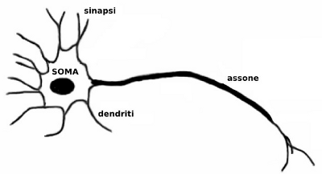
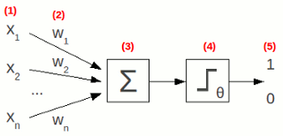
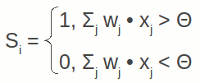
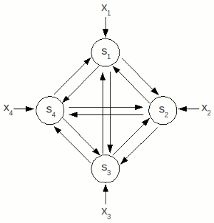
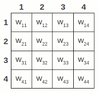
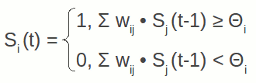
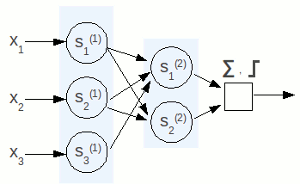
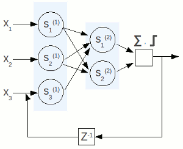

Torna alla pagina di Sistemi Intelligenti
:: Sistemi Intelligenti - Appunti del 6 Ottobre ::
La lezione di oggi è stata tenuta - in via del tutto eccezionale - dal prof Ferrari.
Introduzione alle reti neurali
Le reti neurali sono un paradigma (strumento) matematico che mima il comportamento del cervello umano, considerato intelligente. Un dispositivo si definisce intelligente quando recepisce segnali dall'esterno e si adatta alla situazione per svolgere al meglio la propria missione. I concetti chiave sono quindi l' apprendimento e l' adattamento all'ambiente circostante una volta data una direttiva principale.
Un esempio illuminante: la vespa è un insetto premuroso, e vuole che le sue uova si schiudano in un ambiente sicuro e funzionale. Per questo motivo ispeziona accuratamente tutti i cunicoli della nursery, predispone le cibarie per la prole, e così via, ripetendo queste azioni in modo ossessivo e per niente adattivo tutte le volte che nota un minimo cambiamento nell'ambiente. Un comportamento che può sembrare intelligente (volto alla tutela delle uova) è dunque applicato in modo molto poco furbo: se la vespa nota mille volte di fila lo stesso cambiamento, partirà mille volte di fila con l'ispezione completa. E allora sei de coccio.
Reti neurali naturali
Le reti neurali naturali - o biologiche - sono il modello cui si ispirano quelle artificiali, e per questo motivo è importante capire come funzionano. Per ovvie ragioni semplificheremo al massimo i concetti.
Il sistema nervoso centrale è costituito da moltissime cellule chiamate neuroni collegate tra loro. Ciò che fanno è ascoltare i loro vicini, elaborare i messaggi e inviarli agli altri neuroni ad essi collegati, il tutto attraverso lo scambio di segnali elettrici.

Nella figura a destra uno schemino su come è fatto un neurone.
I dendriti sono praticamente delle periferiche di input, che attraverso le sinapsi alle loro estremità ricevono gli impulsi inviati dai neuroni vicini.
Il soma si occupa invece dell'elaborazione dei segnali, ovvero: somma, sogliatura (valutazione del superamento di un certo valore soglia), generazione di impulsi.
Questi ultimi sono trasmessi ai vicini attraverso l'assone del neurone.
La potenza di calcolo del cervello è legata non tanto alle performance dei singoli soma, e nemmeno al numero di neuroni (che per la cronaca sono stimati intorno ai 100 miliardi, 1011), ma piuttosto al numero di collegamenti. Questi dipendono dal numero totale di sinapsi, ovvero circa 1014.
Prima abbiamo parlato di adattamento, come è "implementato" biologicamente dal sistema nervoso? Cambiando la struttura della rete neurale attraverso modifiche di alcune caratteristiche del singolo neurone, in particolare intervenendo sulla plasticità sinaptica (che permette di modulare gli impulsi ricevuti, così da inibire o favorire un certo collegamento) e sulla permeabilità della membrana (che interviene sulla soglia di reazione del neurone).
Ribadiamo che stiamo semplificando al massimo, nella realtà i neuroni non sono isolati ma raccolti in gruppetti con funzionalità omogenee, i collegamenti avvengono con modalità leggermente diverse, gli impulsi non coinvolgono solo segnali elettrici ma anche reazioni chimiche, eccetera eccetera. Amen, sappiamo già abbastanza per elaborare una rete neurale artificiale più che soddisfacente, chi se ne frega se si tratta della semplificazione di un modello già semplificato!
Formalizzazioni di McCulloch e Pitts
La prima formalizzazione matematica del comportamento di un neurone è stata proposta da McCulloch e Pitts nei primi anni '40. Il loro modello si componeva di due elementi, uno che fa la somma dei segnali in ingresso ed uno che fa la sogliatura che genera la risposta. Ecco lo schema:

Breve legenda:
- ingressi, quindi altri neuroni dello stesso tipo. Vale 1 quando il collegamento è attivato, 0 quando non lo è
- pesi applicati agli ingressi, che rappresentano la plasticità sinaptica. Possono avere tre valori: +1 quando l'ingresso va premiato, -1 quando va inibito, 0 se il collegamento tra due neuroni non esiste
- somma pesata degli ingressi, chiamata anche potenziale di attivazione. Si tratta in pratica della sommatoria dei prodotti di ciascun segnale di ingresso per il peso del collegamento che lo trasmette
- sogliatura della somma in base a un certo valore θ
- uscita del neurone, sparato ai vicini. Se l'ingresso è maggiore della soglia allora la risposta sarà 1, altrimenti 0. In alcune varianti (che vedremo poi) si preferisce utilizzare come valori -1 e 1
Il modello matematico seguente è la funzione di attivazione del neurone artificiale, ed è una formalizzazione di quanto visto finora:

I tipi di funzioni calcolabili dipenderanno dal numero di neuroni, dalle loro connessioni e dai pesi dati agli ingressi. Questi ultimi sono dei veri e propri parametri, dunque si presenta il problema di scegliere il valore corretto da dargli. Una tecnica potrebbe essere fare un mega sistemone che tenga conto di tutti i neuroni, quindi tutti gli ingressi, tutte le uscite, tutti i pesi, insomma qualcosa di estremamente complesso; l'alternativa è farsi furbi e adottare degli stratagemmi, magari proprio gli stessi utilizzati dalle reti neurali naturali.
Esistono diverse varianti del modello di McCulloch e Pitts, che differiscono in particolare per la loro funzione di attivazione. Tra le principali alternative proposte alla funzione originale a gradino, citiamo ad esempio:
- sigmoide, dove Si = 1 / (1 + e-x_) . In questo caso avremo agli estremi valori molto netti, e nel mezzo comportamenti intermedi
- a simmetria radiale (Radial basis functions), in cui la risposta a uno stimolo dipende dalla distanza dell'ingresso rispetto ad un certo parametro detto "centro". Questo parametro è individuato da un punto nello spazio degli ingressi, ed è caratteristico di ogni neurone
Applicazioni
Le reti neurali sono particolarmente potenti per tutti quei problemi non lineari per i quali si hanno a disposizione un gran numero di esempi di comportamento atteso.
Elenchiamo qualche applicazione concreta:
- approssimazione di funzioni, chiamata con termini statistici regressione
- ricostruzione delle serie temporali, ovvero quelle sequenze di valori che descrivono un fenomeno che ha una ciclicità difficilmente individuabile. Più terra terra, sono quei fenomeni che si sa cosa faranno ma non si sa quando; ad esempio previsioni meteo o andamento della borsa
- classificazione, che avendo una certa conoscenza di come un fenomeno può andare a strutturarsi, sa capire in che categoria mettere un nuovo evento quando questo accade. Un'applicazione classica si ha per la medicina, in cui si è in grado di stabilire se un paziente è sano o malato a seconda dei risultati delle sue analisi
- clustering, molto simile alla classificazione, ma in questo caso le categorie non sono note a priori: le varie classi sono completamente individuate dalla rete neurale a partire dall'insieme degli esempi che gli fornisco
- data processing o elaborazione dei segnali, come ad esempio il filtraggio del rumore (che può essere comunque riconducibile al concetto di approssimazione)
- memoria associativa, che potrebbe rientrare nella categoria "classificazione", ma che è abbastanza importante da meritarsi un punto elenco a parte. Si tratta di una caratteristica importante degli organismi intelligenti, ed è la capacità di ricordare qualcosa per associazione. Due esempi: stiamo ascoltando una canzone (sensazione sonora) e ci viene in mente la scena di un film (sensazione visiva); stiamo guardando una foto in cui il viso di una persona è nascosto da qualcosa, ma noi lo riconosciamo e riusciamo comunque a ricostruire il suo volto.
Rete di Hopfield
Il modello di rete che meglio realizza l'applicazione di memoria associativa è la rete di Hopfield. I neuroni sono completamente connessi tra loro, così che ognuno trasmetta (riceva) ogni singolo segnale a (da) tutti gli altri.
| 
| Ad ogni connessione sono assegnati due pesi, uno per ogni direzione di percorrenza. Il tutto è facilmente rappresentabile con una matrice.

Anche in questo caso il singolo neurone ha un comportamento a soglie, ma le risposte possono avere valore 1 o -1. Entra inoltre in gioco il fattore tempo, e di conseguenza il concetto di stato della rete.
|
La formalizzazione matematica della funzione di attivazione è:

Da un punto di vista temporale, possiamo possiamo dire che:
- in t0 vengono pompati gli ingressi nei neuroni
- in t1 avviene la valutazione descritta nella funzione di attivazione
- negli istanti successivi c'è una continua evoluzione, che può convergere a un certo stato o ciclarne un insieme
La configurazione della rete neurale prende il nome di addestramento, preferendo a un termine freddo e tecnico uno che mantenga la metafora biologica della materia. L'idea di fondo è sottoporre alla rete un insieme di esempi specifici, che si spera sarà poi in grado di generalizzare ad ogni situazione.
Vediamo in particolare l'apprendimento Hebbiano (dal nome dell'ideatore, Hebb), in cui le connessioni tra due neuroni vicini si rinforzano se essi danno risposte simili agli stessi stimoli, e si indeboliscono altrimenti. Ciò si traduce dicendo che se il comportamento di due neuroni è simile allora il peso della loro connessione aumenta. In formula: ∆wij = Si * Sj . E' facile notare che se i segni dei fattori son discordi la variazione sarà negativa, e viceversa.
Abbiamo iniziato il capitoletto dicendo che la rete di Hopfield riesce a simulare una memoria associativa. E' infatti verificabile che lo stato a cui eventualmente converge è molto simile (in toto o in parte) a quello con cui è stato configurato in partenza.
Reti feed-forward e reti ricorrenti
Nelle reti feed-forward la rete neurale è organizzata in strati detti layer, e l'informazione passa da uno all'altro secondo un'unica direzione. Questa caratteristica è senz'altro una forzatura che non trova corrispondenze biologiche, ma rende la rete molto più semplice da implementare garantendo al tempo stesso la capacità di risolvere la totalità dei problemi. Attenzione però: il fatto che sia più semplice da realizzare non implica che sia poco costosa!
| Dallo schema accanto possiamo notare che ogni neurone di un layer è connesso ad ogni neurone dello strato successivo, ma per eliminare un collegamento basta assegnargli peso 0. A proposito dei pesi, anche in questo caso la loro rappresentazione diventa molto più semplice con le matrici.
| 
|
| Se ad una feed-forward aggiungiamo le retroazioni otteniamo una rete ricorrente, un tipo di modello particolarmente adatto per le serie temporali, e quindi per cercare di fare buone previsioni basandoci sul passato.
Lo Z-1 in basso nello schema è il ritardatore, nel cui apice viene indicato il numero di passi che saranno ritardati.
| 
|
Reti competitive
L'ultima famiglia di reti neurali che vedremo oggi sono le reti competitive, così dette perché i loro elementi costitutivi sono messi tra loro in competizione durante l'apprendimento. Tipicamente non sono usate per calcolare funzioni, ma per implementare l'apprendimento non supervisionato.
Il nuovo concetto da introdurre per capirle è quello di spazio delle caratteristiche o ufficio, ovvero lo spazio in cui sono definiti gli esempi e per cui vale la proprietà che più due elementi sono simili e minore sarà la distanza tra le loro coordinate. Ciò che andrà fatto è configurare la rete in modo che la densità dei neuroni collocati in tale spazo sia proporzionale alla probabilità di occorrenza degli esempi.
Durante l'addestramento il neurone può - e deve - cambiare la sua posizione nello spazio delle caratteristiche, cercando di minimizzare la sua distanza dagli esempi competendo con tutti gli altri per accaparrarsi il posto migliore.
Un esempio di rete competitiva è la Self Organising Maps (SOM), ovvero "mappe auto-adattanti". Il nome è dovuto al fatto che i neuroni non solo competono per la loro posizione nello spazio delle caratteristiche, ma cercano anche di mantenere una struttura propria tra loro, tipicamente a maglia.
Strategie di apprendimento
Concludiamo con una carrelata sulle possibili strategie di apprendimento:
- non supervisionata, ovvero ci limitiamo a dare alla rete solo l'insieme degli esempi e lasciamo che si organizzi da sola. Nota: l'insieme degli esempi potrebbe benissimo essere un file che contiene un elenco di coordinate bidimensionali, non immaginiamoci chissà sola
- supervisionata, in cui non solo forniamo gli ingressi, ma diciamo anche cosa vogliamo in risposta. Questa strategia è quella adottata generalmente per l'approssimazone di funzioni e per le classificazioni. E' ad esempio implementata nelle reti feed-forward
- apprendimento Hebbiano, di cui abbiamo parlato prima
- reinforcement learning, basato sul principio di "premio e punizione". E' un tipo di apprendimento supervisionato ma non troppo, in cui si introduce la valutazione della risposta della rete premiandola quando il risultato si avvicina a quello attesa, e punendola viceversa. Si usa quando non è semplicissimo quantificare l'entità dell'errore
Torna alla pagina di Sistemi Intelligenti